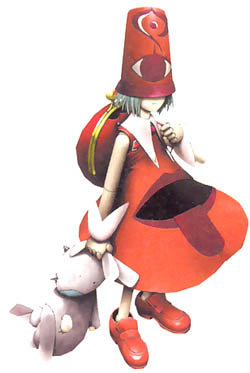

Les Mariopées
Ils n'appartiennent ni aux humains, ni aux deimos, en réalité, ils ont été crées par le Divin Souverain afin de pouvoir détruire le monde. Depuis que leur créateur à été banni, ils ont acquis leur libre arbitre et ils parcours désormais le monde en quête de connaissances, de réponses et parfois de pouvoir. Les mariopées sont des êtres étranges et ils possèdent des capacités uniques en leur genre. Malgré leur petite taille, il ne faut pas les sous-estimer car ils sont naturellement puissants. Ils sont capable de ressentir les émotions des deimos et des humains qu'ils interprètent avec des couleurs.

Durant le grand conflit
Lors de la guerre entre les deimos et les humains, ils luttèrent contre le Dilzweld et aucun d'eux n'a jamais perdu un combat contre l'armée d'après les rumeurs. Ils ne s'allièrent ni aux humains ni aux deimos, sauf Bébédora qui suivi Darc par curiosité.
Des petits êtres étranges
Les mariopées sont asexués et ressemblent à des enfants et portent des vêtements très colorés arborant des motifs étranges. Ils traînent avec eux un jouet ou une peluche qui leur sert à lancer leurs sorts uniques. Aveugles, ils perçoivent le monde selon des couleurs, personne en dehors d'eux ne sait à quoi cela ressemble comme vision. Ils mesurent en moyenne entre 80 centimètres et 1,00 mètre pour environ 20 à 30 kg.
Noms mariopées
Les deimos ne possèdent pas de nom de famille, cela ne fait pas partie de leur culture. (les noms daedras ou énigmatiques marchent plutôt bien)
Noms : Bébédora (présent dans le jeu), Elnaura, Séréné, Enigma, Luna.
Traits
Augmentation de caractéristiques. Votre Sagesse augmente de 2 et votre Intelligence de 1.
Âge. Un mariopée n'a pas d'âge, on ne sait pas depuis quand ils existent et si le temps les affecte.
Alignement. Depuis que le divin souverain n'a plus le contrôle sur eux, ils font ce qui leur plaît sans pencher du côté bon ou mauvais, même si certain penchent d'un côté ou l'autre.
Taille. Les mariopées mesurent en moyenne entre 80 centimètres et 1,00 mètre de haut, pour un poids variant entre 20 et 30 kg. Votre taille est Petite.
Vitesse. Votre vitesse de base est 7,50 mètres.
Sondeur d'âme. Vous pouvez utiliser cette capacité 1 fois par jour. La cible doit effectuer un jet de sauvegarde de Sagesse, en cas d'échec, le lanceur connaît précisément quel est l'état des émotions de la cible.
Vision dans le noir supérieure. Votre vision dans le noir a une portée de 36 mètres.
Langues. Vous pouvez parler, lire et écrire le commun et le mariopée.
Capacités magiques
| Niveau personnage | Niveau des sorts | Sorts | - Emplacements de sorts - | |||||||
| 1 | 2 | 3 | 4 | 5 | 6 | 7 | 8 | |||
| 1 | 1 | Porte des ténèbres, Contrôle mental | 1 | |||||||
| 3 | 2 | 2 | 1 | |||||||
| 5 | 3 | 2 | 1 | 1 | ||||||
| 7 | 4 | Tornade, Orage de feu | 3 | 2 | 1 | 1 | ||||
| 9 | 5 | 3 | 2 | 2 | 1 | 1 | ||||
| 11 | 6 | 3 | 3 | 2 | 2 | 1 | 1 | |||
| 13 | 7 | Division | 4 | 3 | 3 | 2 | 2 | 1 | 1 | |
| 15 | 8 | Ténèbres mortelles | 4 | 3 | 3 | 3 | 2 | 1 | 1 | 1 |
Liés aux ténèbres. Les mariopées sont capables d'utiliser des emplacements de sorts supérieurs à celui du niveau du sort pour augmenter l'efficacité de ses sorts de ténèbres (+1 dé de dégâts / niveau d'emplacement de sort) ce qui augmente le coût en pierres des esprits de 2/niveau de sort supplémentaire.
Par exemple le sort porte des ténèbres est un sort de niveau 1 qui tape à 3d6 et coûte 12 pierres des esprits. S'il est utilisé avec un emplacement de sort de niveau 2 il fera 4d6 pour un coût de 14 pierres des esprits.
Le sort contrôle mental peut fonctionner en ciblant une créature supplémentaire tous les 2 niveaux d'emplacements de sorts supplémentaires utilisés (2 cibles pour un emplacement de sort de niveau 3 et 3 cibles pour une emplacement des niveau 5).
Connexion à la magie. Ils sont également capable d'utiliser des emplacements de sorts supérieurs à celui du niveau du sort pour augmenter l'efficacité de sorts des autres éléments connus mais pour un prix de 3 pierres des esprit par niveau d'emplacement de sort supplémentaire.